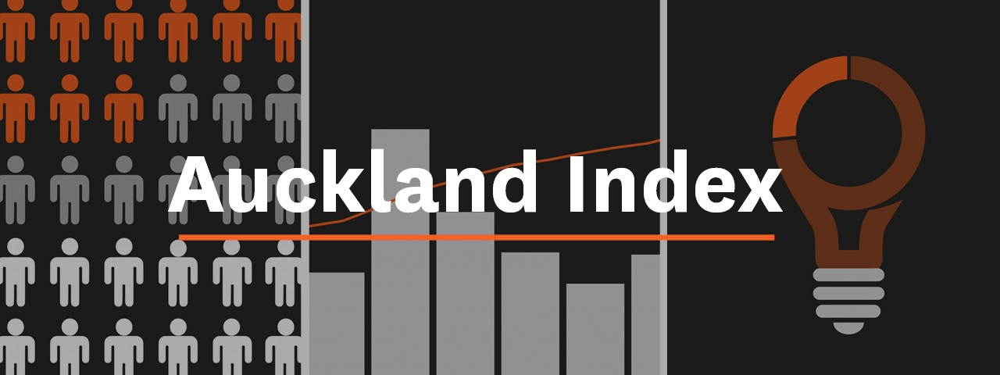

Using Python to draw data from 20+ sources, this project automates the data downloading,
wrangling and uploading of
the Auckland Index - a digital repository of Auckland centric data. Initially, the
Auckland Index was updated manually
on a quarterly basis, but the need for a COVID-19 dashboard in mid-2020 with
daily data updates provided the necessity
for an automated proccess, and this program was developed to fill this need.
See GitHub repo for more information.

Born from a desire to tell a story of the factors that influence winning in Fantasy Premier
League, as well as track progress among rivals, this project uses Python to retreive data
from the Fantasy Premier League API, from which it is visualized in Tableau.

This project explores COVID-19 data using SQL queries. Data is sourced from ourworldindata.org,
stored in SQLite, visualised using Tableau Public and updated on a daily basis. The Tableau viz
shows a world view of
cases, deaths and vaccine rates, which can be filtered down to individual countries.

An SQL case study on customer and sales data from a Japanese restaurant. This case study uses
window functions, CTE's, joins, date manipulations and a variety of aggregate functions to
provide insight into the restaurant's customers.